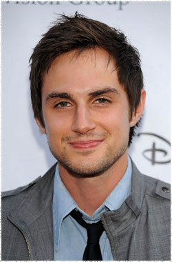

Эндрю Дж. Уэст
 Гарет (актёр Эндрю Дж. Уэст) - является прагматичным лидером в убежище Терминус, он опасный человек с секретами.
Эндрю Дж. Уэст родился в Чикаго, штат Индиана, и вырос в соседнем городе Лейк-Стейшн. Он был заинтересован игрой в кино с раннего возраста, но не преследовал своё ремесло, пока не поступил в Университет Индианы, где изучал философию и антропологию. Он прослушивался на университетских играх и начал получать роли, включая лидерство в SubUrbia Эрика Богозиэна. Затем он начал писать, продюссировать, и снимать короткие фильмы со своими студенческими друзьями, некоторые из которых ушли на фестивали и завоевали награды.
После переезда в Лос-Анджелес, он получил роль молодого Кристиана в культовом телесериале Части тела, также были одновременные повторяющиеся роли в сериалах Университет и Избалованные, и роли в качестве приглашённой звезды в сериалах, таких как: Кости, CSI: Нью-Йорк, Говорящая с призраками, Касл, Следствие по телу, Бред, который несет мой отец и Пригород.
Он был основным актёром в хорошо принятом критиками веб сериале Роквилль Калифорния от Джоша Шварца. А также в двух пилотах сериалов канала ABC: Who Gets the Parents c Джейн Качмарек и Адамом Аркином и Family Practice с Кристофером Ллойдом и Джин Смарт.
Наиболее известен по фильмам:
Касл
Университет
Кости
C.S.I. Место преступления